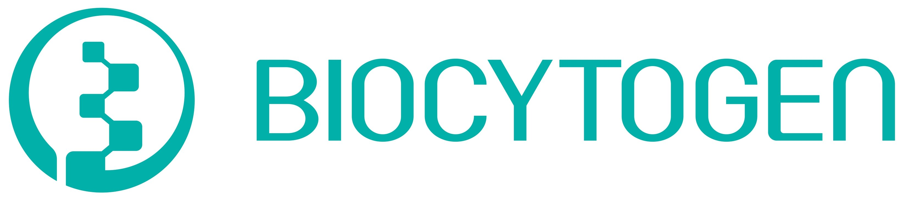
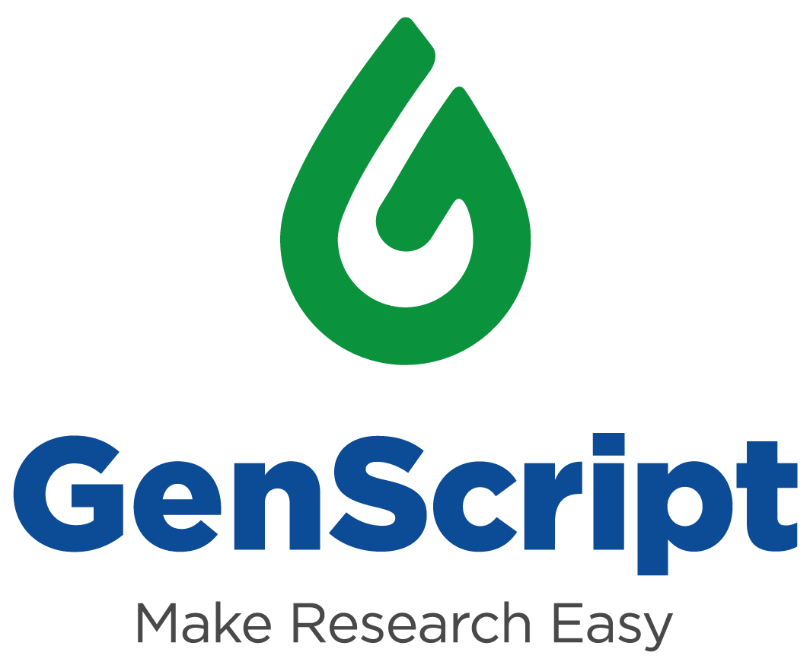

Tsinghua BioMed Reunion | 2023

| Home | Registration | Resources |
清华生物医药北美校友聚会始办于九十年代初，自2011年起形成了年会的传统。2022年9月初，在经历疫情期间的短暂停歇后，这项传统在广大校友的鼎力支持下得到延续和发扬，参会者达二百余名。2023年，新的篇章即将开启，我们诚挚地邀请清华大学生命科学学院、医学院和药学院的校友，以及所有在生物和医药相关领域工作和学习的清华其他院系的校友参加此次聚会。我们希望借此为广大校友搭建一个与新朋相识、和老友相聚的桥梁，为校友间的交流与合作提供一个助力的平台！
与往年类似，组委会将邀请生物和医药领域的清华校友代表通过演讲的形式分享自己在学界或业界的职业发展经验与心路历程，同时为线下与会者安排午餐会和充足的社交时间自由交流。如果您希望我们邀请特定的演讲嘉宾，或者您本人愿意在本次活动中作演讲，又或者您有意为本活动提供个人或企业赞助，我们欢迎您在注册时填选相关项表达您的意向或直接致信我们（biology@tsinghua.org）。演讲嘉宾名单和聚会日程安排将于日后在本站和我们的微信公众号"THUBioMed北美校友聚会"上发布，敬请关注！

|

|

|

|
丛乐Assistant ProfessorStanford University |
郝琦Principal Scientist, Associate DirectorCalico Life Sciences |
Zihuai HeAssistant ProfessorStanford University |
洪暐哲ProfessorUCLA |

|

|

|

|
李治非高级经理中国科学院控股有限公司 |
刘博闻Co-Founder, COO, and Director of IPAPstem Therapeutics |
冉辰Assistant ProfessorThe Scripps Research Institute |
王竞Professor and Neurobiology Department ChairUCSD |

|

|

|

|
Wenyuan WangAssociate PartnerMcKinsey & Co |
颜宁 (keynote speaker)院长深圳医学科学院 |
殷梦雅Senior Data ScientistGenentech |
Derek YuanManaging DirectorLYFE Capital |

|

|

|
|
张冰清Senior DirectorAlamar Biosciences |
Qing ZhangPartnerLDV Partners |
Rui ZhongTech Lead, Staff ML Data Scientist |
组委会向为此次活动提供赞助的个人 [ 孙中平（清华大学电子系82级、生研87级校友）与廖国娟（生研86级校友）、郭霆（生物系01级校友）、丁霄哲（生命学院10级校友）] 表示衷心的感谢！另外，为本次活动提供赞助的企业有：
| Taimei Technology is a pioneering force in the R&D and life science sector, specializing in digital innovation. Their advanced integrated digital platform is at the forefront of clinical research, offering profound insights into drug R&D, pharmacovigilance, marketing & sales, and market access. Taimei Technology was founded in 2013, with 1500+ worldwide employees and footprints across North America, EU, and APAC regions. |
|  | 百奥赛图（股票代码：02315.HK）是一家创新技术驱动新药研发的国际性生物技术公司，致力于成为全球新药发源地，以专注技术创新、持续新药产出、守护人类健康为使命。基于百奥赛图自主研发并拥有完全独立知识产权的全人抗体RenMice®平台（RenMab®、RenLite®和RenNano®小鼠），将单抗、双抗和纳米抗体开发技术平台、动物体内药效筛选平台、强大的临床开发能力有机整合在一起，形成了独具特色、涵盖药物研发全流程的新药研发能力。百奥赛图正在对1000多个潜在可成药的靶点进行规模化药物开发（“千鼠万抗™”计划），截至2023年6月30日，百奥赛图已签署了50项药物合作开发/授权/转让协议并与包括多家MNC在内的企业达成了42个靶点项目RenMice®平台授权开发合作。同时百奥赛图建立了由10项在研药物组成的核心管线，并且已就其中多项临床资产与外部合作方建立了项目合作关系。未来，百奥赛图将继续携手全球合作伙伴，持续产出众多抗体药物，更好地惠及患者。百奥赛图总部位于北京，在中国（江苏海门、上海）、美国（波士顿、旧金山）及德国海德堡等地设有分支机构。 |
|  | GenScript USA Inc (1548.HK), founded in New Jersey, US, in 2002, is a pioneering biotechnology company dedicated to advancing life science research, drug discovery, and development through innovative solutions. With a relentless commitment to excellence, GenScript has become a global leader in providing a comprehensive portfolio of services and products that empower scientists and researchers to push the boundaries of science and medicine. GenScript's expertise spans a wide spectrum of disciplines, including gene synthesis, IVT mRNA, peptides, gene editing, protein engineering, antibody development, cell line generation, and molecular biology reagents and products. Driven by the corporate mission of “make people and nature healthier through biotechnology”, GenScript is proudly serving premium, convenient and reliable services and products to over 200,000 customers. |
{kind=link}